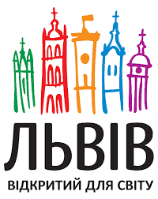
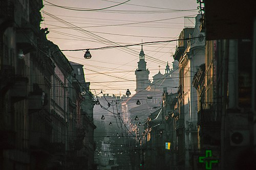

Назва
Засновник Львова король Данило назвав місто на честь свого сина князя Лева Даниловича. У давнину
зустрічалися варіанти назви Львігород (Lwihorod), Levenberg, Lemborg, Lemburg, Lemburga, Leonsburg,
Lewensburg, Leontopolis, Leobios, civitas Leona, İli, İlibot, Litbon, Litbade.
Щодо Львова
традиційними є багато епітетів. Розповсюдженою є назва «Місто Лева». Час від часу вживаються такі
порівняння, назви та словосполучення, як «місто левів», «місто сплячих левів», «Королівське місто»,
«Перлина корони Європи», «Місто-музей», «столиця Галичини», «маленький Париж», «маленький Відень»,
«український П'ємонт», «Бандерштадт», «культурна столиця України» та інші.
Символіка
Офіційно затвердженими символами Львова є герб, великий герб, хоругва Львівської міської ради та логотип.
Статут Львова символами міста визначає також назви чи зображення архітектурних та історичних пам'яток.
До основи сучасного герба Львова покладено герб із печатки міста з середини XIV ст. — кам'яна брама
з трьома вежами, в отворі воріт якої крокує золотий лев. Великий герб Львова — це щит із гербом міста,
увінчаний срібною міською короною з трьома зубцями, який тримають лев і давньоруський воїн. Прапором
Львова є синє квадратне полотнище з зображенням міського герба, обрамлене лиштвою, що складається з
жовтих та синіх рівнобедрених трикутників по краях. Логотипом Львова є зображення п'яти різнобарвних веж
(зліва — направо): дзвіниці Вірменського собору, вежі Корнякта, міської ратуші, вежі Латинської катедри,
дзвіниці монастиря Бернардинів та слоган «Львів відкритий для світу» під ними. Де-факто девізом Львова
сьогодні є гасло «Львів відкритий для світу», адже воно зображене на логотипі міста. На гербі 1936—1939
років як девіз використовувався латинський вислів «Semper fidelis» (Завжди вірний), проте після Другої
світової війни він більше не вживався.
Географія
Розміщення та фізична географія
Львів розміщений у центральній частині Львівської області між Яворівським, Жовківським та Пустомитівським районами, у східноєвропейському часовому поясі на 24 меридіані; місцевий час відстає від поясного на 24 хвилини. Площа міста в адміністративних межах 2012 року становить близько 182 км².
Клімат
Львівський клімат є помірно континентальним з м'якою зимою і теплим літом. Середньомісячна температура повітря становить −4 °C у січні і +18 °C у липні. Абсолютний максимум температури повітря (+37,0 °C) зафіксований у серпні 1921 року, абсолютний мінімум — (−33,6 °C) 10 лютого 1929 року; максимальна кількість опадів (1 422 мм) випала 1893 року. Загалом за останні 100—120 років температура повітря у Львові має тенденцію до підвищення. За цей період середньорічна температура підвищилася принаймні на 1 °C[15]. Вологість повітря в середньому за рік становить 79 %. Найчастіше дмуть західні вітри, найрідше — північно-східні.
Стан довкілля
З 90-х років XX століття, відколи у Львові спостерігається економічний спад, екологічна ситуація у місті покращилася. За цей період закрито низку великих промислових підприємств, унаслідок чого зменшилися і промислові викиди. Водночас низка природних чинників зумовлює тенденції до підвищення забруднення повітря, зокрема, у центральній частині Львова. У цій частині міста рельєф знижується і тому тут погана циркуляція повітря, це призводить до великої концентрації вуглекислого газу, оксидів азоту і сірки, цьому сприяє ще й інтенсивний автомобільний рух через історичний центр міста. Тому у безвітряну погоду в центрі Львова можливе утворення смогу. Загалом викиди автотранспорту до атмосфери становлять понад 50 % усіх викидів міста, близько 30 % припадає на теплоенергетику.
Історія
Археологічні розкопки свідчать, що територія сучасного міста була заселена ще у V столітті[23]. Наприкінці X століття ці землі ввійшли до складу Русі, зокрема удільних Галицького, а з 1199 року — Галицько-Волинського князівств. Засновником міста традиційно вважають короля Данила, який назвав укріплене поселення на честь свого сина Лева, хоча жодне джерело не дає підстав для такого твердження. Л. Войтович на основі білорусько-литовських літописів і авторів XVI—XVIII ст. стверджує, що місто заклав Лев Данилович. Місто розташувалося на межі належних Левові Перемишльського та Белзького князівств. Ярослав Ісаєвич припускає, що Данило Романович здійснював загальне керівництво будівництвом, а Лев Данилович керував роботами безпосередньо на місці. Л. Войтович зазначає, що Лев вже 1245 року у битві під Ярославом командував окремим полком, отже, мав власний уділ, у якому міг закладати міста й без дозволу батька. В «Енциклопедії українознавства» час заснування датують кінцем 1240-х або початком 1250-х. Краєзнавець Мечислав Орлович припускав, що місто засноване через цілковиту руйнацію княжого Галича монголо-татарами 1240 року, хоча Галич було зруйновано 1241 року.
Архітектура
В архітектурі Львова, яка не сильно постраждала під час війн XX століття, відображено багато європейських стилів та напрямків, що відповідають різним історичним епохам. Після пожеж 1527 і 1556 року практично не залишилося слідів готичного Львова, проте добре представлено такі епохи: ренесанс, бароко, класицизм. Характерним для Львова став стиль сецесії, трапляються споруди в стилях ар-деко і берлінський модерн.
